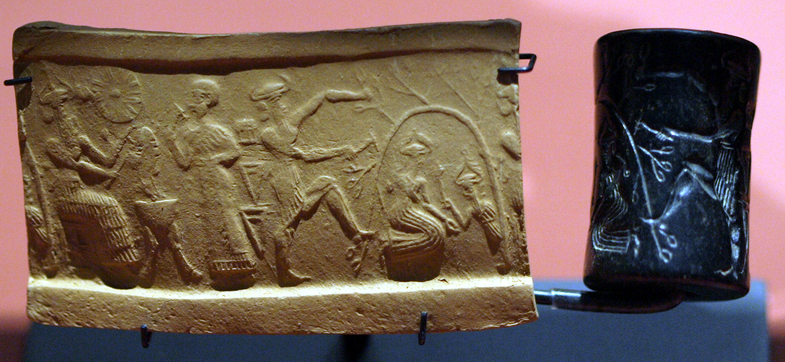
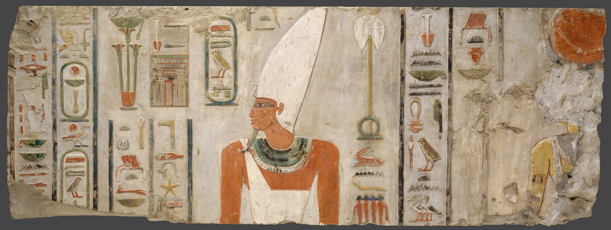
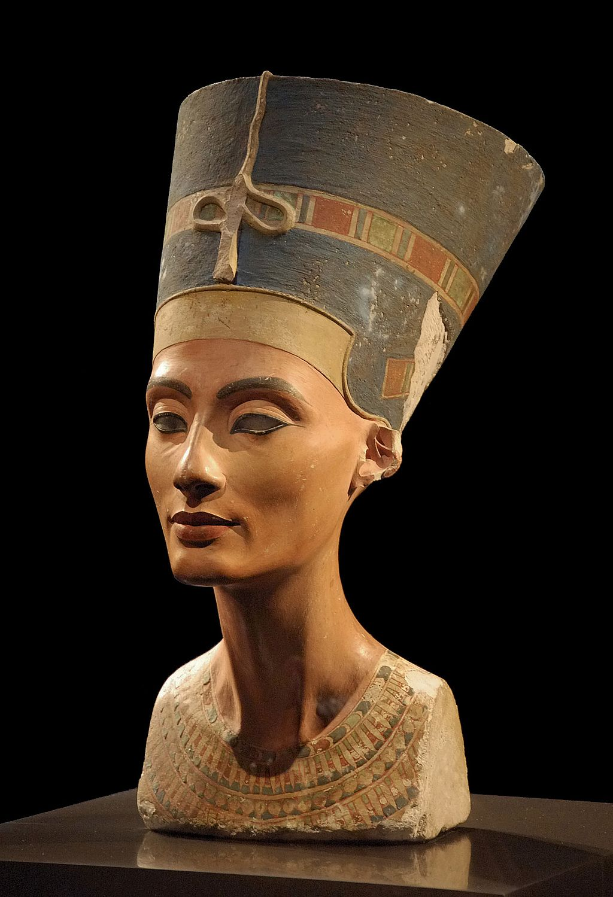

The Venus Statues
The Venus statues are the first recognizably human figures. They appear all over ancient Eurasia, and have been identified as symbols of fertility.
The Bronze Age Starts
The Bronze Age is the period where civilization starts to settle and develop literature--stories that we can now study today. The first civilizations start in the middle east, where we find the first recovered stories and documents.
The Early Dynastic Period
The first dynasty represents the first unification of the Nile into what we know as Egypt. The civilization will go on for thousands of years from this point. The Early Dynastic Period goes from the first to the third dynasty.
The Epic of Gilgamesh
The Epic of Gilgamesh is the first complete work of fiction that still exists in the modern world. It involves themes of friendship, love, power dynamics, masculinity and femininity, and life and death. Gilgamesh has also cemented itself as a part of modern mythology, which can be seen in things like his appearance in Star Trek.
The Old Kingdom
Although not much different culturally from the Early Dynastic Period, the Old Kingdom is considered distinct because of the new developments in architecture. These include the great pyramids and the sphinx. It runs from the third to the seventh dynasty, and is followed by a short intermediate period full of strife. The first surviving papyri are from this period.
The Middle Kingdom
The Middle Kingdom is fascinating because it is the first major source of Egyptian literature unrelated to religion. This includes letters, stories (likely oral tradition that was written down), and more. It runs from the eleventh to the twelfth dynasty. It is followed by another period of instability due to an invasion by the Hyksos.
The New Kingdom
The New Kingdom is the most prosperous of the ancient Egyptian kingdoms, and probably the most famous, including pharaohs such as Tutankhamun, Ramesses, Thutmose III, and more. This period lasts from the eighteenth to the twentieth dynasty.
The Bronze Age Collapse
The Bronze Age Collapse represents the end of the majority of bronze age civilizations in the easten Mediterranean and the Middle East. No cause has been proven or accepted, although many theories exist. Literacy rates, quality of living, and preservation of works all dropped severely.
Rise of Greek City-States
Around this time, the area around the Aegean sea gives rise to a collection of up to a thousand separate cities, all acting as independent states that fought, traded, and interacted. This period is called "classical antiquity," and is one of the most studied periods of history today due to the prevalence of still-existing art, literature, and culture.

The Bronze Age Collapse
The Bronze Age Collapse represents the end of the majority of bronze age civilizations in the easten Mediterranean and the Middle East. No cause has been proven or accepted, although many theories exist. Literacy rates, quality of living, and preservation of works all dropped severely.
1200BCEThe Bronze Age Collapse
The Bronze Age Collapse represents the end of the majority of bronze age civilizations in the easten Mediterranean and the Middle East. No cause has been proven or accepted, although many theories exist. Literacy rates, quality of living, and preservation of works all dropped severely.
1200BCEThe Bronze Age Collapse
The Bronze Age Collapse represents the end of the majority of bronze age civilizations in the easten Mediterranean and the Middle East. No cause has been proven or accepted, although many theories exist. Literacy rates, quality of living, and preservation of works all dropped severely.
1200BCEThe Bronze Age Collapse
The Bronze Age Collapse represents the end of the majority of bronze age civilizations in the easten Mediterranean and the Middle East. No cause has been proven or accepted, although many theories exist. Literacy rates, quality of living, and preservation of works all dropped severely.
1200BCEThe Bronze Age Collapse
The Bronze Age Collapse represents the end of the majority of bronze age civilizations in the easten Mediterranean and the Middle East. No cause has been proven or accepted, although many theories exist. Literacy rates, quality of living, and preservation of works all dropped severely.
1200BCEThe Bronze Age Collapse
The Bronze Age Collapse represents the end of the majority of bronze age civilizations in the easten Mediterranean and the Middle East. No cause has been proven or accepted, although many theories exist. Literacy rates, quality of living, and preservation of works all dropped severely.
1200BCEThe Bronze Age Collapse
The Bronze Age Collapse represents the end of the majority of bronze age civilizations in the easten Mediterranean and the Middle East. No cause has been proven or accepted, although many theories exist. Literacy rates, quality of living, and preservation of works all dropped severely.
1200BCE